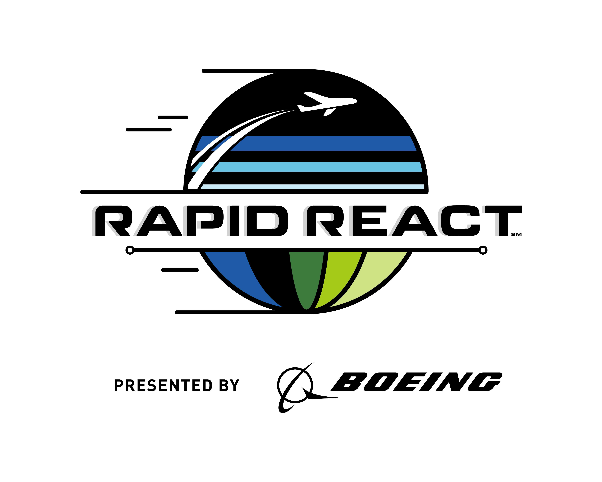

The 2022 game has been announced: Rapid React, sponsored by the Boeing Company! If you are interested in joining our team this year, please view all the resources below.

Kickoff Meeting Recap
If you were unable to attend the Kickoff meeting, here are some important things to know:- You (or a parent) will need to email Mr. Eastmond and let him know you are interested in joining. This is so he can get a count for team shirts, which we will be ordering soon. He can also answer any additional questions you may have.
- In order to compete, you will need to have read and understood the Game Manual linked above. The password for this year's game manual is W3lc0m3B^Ck2022! .
- The FRC (FIRST Robotics Competition) Utah Regional will be held April 7-9 at the Maverik Center in West Valley. We will be attending all three days of the competition. Here is a look at the tentative schedule for those days:
- April 7: Competition Check-in and setup. We will be setting up our pit area, getting our robot inspected, and participating in "test" matches to ensure the robot functions correctly. The Scout team will be interacting with other teams, marking information in our Scouting Software for use later in the competition. (More on that in a second)
- April 8: Qualifying Matches held all day Friday will determine our ranking and potential advancements to the Semifinal rounds. It is most likely we will be traveling to the competition each day from the ALC, so expect to leave around 6AM and not return until 10 or 11PM each night.
- April 9: The final qualifying matches will be held first thing in the morning. Then, the top 8 teams will select two other teams to be a part of their alliance for the Semifinal rounds and above. If we are selected (or select other teams) for Semifinals, we will be staying until semifinals are over (if we don't win). If we win and continue into the final rounds, we will stay until those are completed.
- As a team, we will be meeting every Saturday at the ALC until the competition (with the exception of January 22, where we will not meet). Meetings will be from 10AM to 1 or 2PM. Each meeting will be crucial to our success at the Competition, so please attend as many as you can! However, we do understand if you cannot make it for any reason.
- This year, we will have 7 teams of specialists that will all work in conjunction with one another to ensure the success of our team as a whole. Positions and roles will overlap into different team models as outlined below, so do not expect to be in one role. Read through them below to gain an understanding of how the overarching teams work:
- ENGINEERING/ELECTRONICS: This is the team in charge of building and wiring all components of the robot together. Also called the "Build Team".
- PROGRAMMING: This team works closely with Engineering/Electronics to ensure that the physical components match the software components.
- SENSOR/IMAGING TECHNOLOGY: This is the team working exclusively with programming and updating our sensor technology. Technically, this is part of the Programming team.
- CAD / GRAPHIC DESIGN: This is the team in charge of producing any CAD models our team will need. This team is also in charge of designing a team shirt for the year.
- MEDIA/MARKETING: This is the team in charge of building up our team's brand and publicity. This team will produce promotional content (photo/video/graphics) in conjunction with the Cad/Graphic Design Team to ensure any information about events are relayed to the public.
- SCOUTING TEAM: This is the team that will learn all the information about the other teams while at the competition. It is vital that we know not only our competitors, but any potential allies that we can invite to join our alliance should we advance to the Semifinals.
- DRIVE TEAM: This is the team that will be tasked with operating the robot at competition. Note: This is the most stressful position on the team - drivers are the representatives of the whole team and its sponsors in the way they operate the robot and act at the competition.
Build Progress
Recent build highlights for the 2022 season include:
- 01/08: Season Kickoff Meeting. We discussed our strategy for this season and reviewed the 2022 Kit of Parts.
- 01/14: Dimensional Analysis conducted to begin planning of the Robot
- 01/15: Further dimensional analysis conducted; started planning the intake arm
- 01/29: Built the DuckBot and 'Bob'. Mocked up a shooter arm; Began rebuilding Bot Ross' gearboxes.

Follow the ALChemists on Instagram: @alcrobotics
Follow the ALC: @alc_nebo